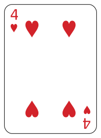

4 Counting Techniques
Here we develop a toolbox of counting techniques to help us calculate probabilities.
4.1 Multipiclation Principle
Proposition 4.1 (Addition Principle) Let \(A\) and \(B\) be disjoint sets with \(m\) and \(n\) elements, respectively. Then the total number of elements of \(A \cup B\) is \(m+n\).
The addition principle extends to any number of pairwise disjoint sets: The size of the union of pairwise disjoint sets equals the sum of the individual set sizes.
We use the addition principle when we count the size of a set by first breaking the set into disjoint subsets and then counting the size of each subset. The addition principle just says that the size of the original set is found by adding the sizes of these disjoint subsets.
Here’s a simple example to illustrate the point:
How many Major League Baseball teams are there?
Ok, I can do this! Major League Baseball (MLB) is the (dijoint) union of two leagues, the American League (AL), which has 15 teams, and the National League (NL), which also has 15 teams. So all of Major League Baseball has 15 + 15 = 30 teams!
Proposition 4.2 (Multiplication Principle) Given a set \(A\) with \(m\) elements, and a set \(B\) with \(n\) elements, it is possible to form \(m \cdot n\) pairs containing one element from each set.
A simple illustration of the multiplication principle:
In Major League Baseball, the world series is a best-of-7 series between the champion of the AL and the champion of the NL.
How many different world series matchups are possible?
We have 15 possible AL champions and 15 possible NL champions, so we have \(15 \cdot 15 = 225\) possible world series matchups (none of which, in all the years past, have included the Seattle Mariners).
The multiplication principle is the hammer of our counting toolbox.
We often use this hammer in the following manner: Suppose a task is completed by completing \(k\) subtasks. If the subtasks can be completed in \(n_1, n_2, \ldots, n_k\) ways, respectively, then the task itself can be completed in \(n_1 \cdot n_2 \cdot \cdots \cdot n_k\) ways.
The World Series example above fits this mold. We can think of determining the World Series matchup as our task, which we complete by completing two subtasks: (1) Choose the AL champion (15 choices); and (2) Choose the NL champion (15 choices). So we can build ourselves a World Series matchup in \(15^2\) ways.
Let’s look at several more examples.
Example 4.1
a) A menu at a restaurant has 5 salads, 7 main dishes, and 4 desserts. If a dinner consists of ordering a salad, main dish, and dessert (because you’re hungry), how many different dinners are possible?
- Subtask 1: order a salad (5 choices);
- Subtask 2: order a main dish (7 choices);
- Subtask 3: order a dessert (4 choices).
So we have \(5 \cdot 7 \cdot 4 = 140\) possible dinners. If we go to this restaurant once a week, it will take about 2.7 years to try every possible dinner.
b) Suppose a license plate consists of six characters, where each character can be a letter (A-Z) or a digit (0-9). How many different license plates are there?
Here’s a blank license plate, needing to be created:
\[\underline{~~~} ~~~ \underline{~~~} ~~~ \underline{~~~} ~~~ \underline{~~~} ~~~ \underline{~~~} ~~~ \underline{~~~}\] To create the plate, we pick a character for each of the six spots. We have 36 choices at each stage, so the number of distinct plates is \[\underline{36}\cdot \underline{36} \cdot \underline{36} \cdot \underline{36} \cdot \underline{36} \cdot \underline{36} = 36^6 = 2,176,782,336,\] just shy of 2.18 billion.
c) How many 7-digit phone numbers are there, assuming the first digit cannot be 0 or 1?
Count our digit choices at each stage in the process of creating a valid number, and multiply our choices: \[\underline{8}\cdot \underline{10} \cdot \underline{10} \cdot \underline{10} \cdot \underline{10} \cdot \underline{10} \cdot \underline{10} = 8\cdot10^6,\] 8 million on the nose. If we have more than 8 million phones in an area, we need more than one area code.
d) A baseball team has 13 batters. How many different batting lineups of 9 players are possible?
We have to create a lineup with 9 players, and the total number of lineups possible will be found by multiplying our choices at each stage. Since we can’t pick the same player twice, the number of choices decreases by one at each stage in the selection process: \[\underline{13}\cdot \underline{12} \cdot \underline{11} \cdot \underline{10} \cdot \underline{9} \cdot \underline{8} \cdot \underline{7} \cdot \underline{6} \cdot \underline{5}= 259,459,200.\] Over quarter of a billion possible lineups? The season isn’t quite long enough to test out every possible lineup.
e) How many 4-digit integers bigger than 5000 have distinct odd digits?
Record our choices as we set about building such a four-digit number:
\[\underline{~~~} ~~~ \underline{~~~} ~~~ \underline{~~~} ~~~ \underline{~~~}\] Each digit must be odd (1, 3, 5, 7, or 9), and since the number must be bigger than 5000, we only have 3 choices for the “thousands place” (5,7, or 9). Once that has been chosen, we have 4 odd numbers left, so we have 4 choices for the hundreds place. Then 3 choices remain for the tens place, and 2 for the ones place. Multiplying these choices we have \[\underline{3}\cdot \underline{4} \cdot \underline{3} \cdot \underline{2} = 72\] 4-digit integers bigger than 5000 with distinct odd digits.
In examples (b)-(e) above, we counted the number of ordered arrangements - order matters when you’re dialing a phone number, or writing down a license plate, or sending players up to bat, or expressing a 4-digit number. In the case of license plates and phone numbers, the same value can be chosen twice. With the lineup no repeat choices are allowed, the lineup must consist of distinct batters. No repeats for those special 4-digit integers either.
To summarize, in the examples so far we have effectively used what we might call the enumerate subtasks strategy of counting how many different objects are possible as follows:
- break the task of creating the object into a sequence of subtasks
- count how many choices we have for completing each subtask, and
- multiply all these choice counts.
This process works as long as we would create each object we’re trying to count exactly once if we followed every possible combination of step choices.
Example 4.2 (With or Without Replacement) We have reason to consider two variations on the theme of “pick \(k\) elements from the set \(A\).” We can either pick with replacement, meaning each pick is made from the entire set (allowing the same element to be picked multiple times), or we pick without replacement, meaning once an element has been picked, it can’t be picked again.
How many ways can we pick 3 names from the set \(M = \{\)Evelyn, Eddie, Gordon, Oriana\(\}\):
- with replacement? \(\displaystyle \underline{4}\cdot \underline{4}\cdot \underline{4} = 4^3 = 64.\)
- without replacement? \(\displaystyle \underline{4}\cdot \underline{3}\cdot \underline{2} = 24.\)
4.2 Permutations
Definition 4.1 A permutation is an ordered arrangement of distinct objects. The number of ways of ordering \(n\) distinct objects taken \(r\) at a time will be denoted \(\displaystyle P^n_r\).
The symbol \(\displaystyle P^n_r\) denotes the number of ways to create an ordered list of length \(r\) without repeats from a set of \(n\) distinct elements. So, in the baseball lineup example we found \(\displaystyle P^{13}_9 = 259,459,200.\)
In general, \[P^n_r = n \cdot (n-1) \cdot \cdots \cdot (n-r+1),\]
though we can more effectively express \(\displaystyle P^n_r\) via factorials.
Recall, \(n!\) (read ``n factorial”), is shorthand for \[n! = n \cdot (n-1) \cdot \cdots \cdot 2 \cdot 1.\]
For instance, \(5! = 5 \cdot 4 \cdot 3 \cdot 2 \cdot 1 = 120\).
Two notes:
- We set \(0! = 1\)
- Notice that \(n! = n \cdot (n-1)!\), so \(\displaystyle \frac{n!}{(n-1)!} = n\).
So we have the following formula for \(\displaystyle P^n_r\):
\[\begin{equation} P^n_r = \frac{n!}{(n-r)!}. \tag{4.1} \end{equation}\]
Referring to the random phones example 3.4, without listing all the possible ordered arrangements we know there will be \(4!= 24\) ways to return the phones to the 4 students at random (4 phones to choose from when returning one to the first student, 3 phones for the second student, 2 for the third, and 1 for the fourth).
4.3 Combinations
We let \(\displaystyle C^n_r\) equal the number of ways to choose an unordered arrangement of \(r\) distinct elements from a set of \(n\) distinct objects. We also let \(\displaystyle\binom{n}{k}\) denote this number (read as “n choose r”).
For instance, \(\displaystyle\binom{4}{2}\) gives how many distinct subsets of size 2 can be formed from a set of size 4, and we see that \(\displaystyle\binom{4}{2} = 6\) because one can form 6 distinct subsets of size 2 from the set \(\{A,B,C,D\}\): \(\{A,B\}\), \(\{A,C\}\),\(\{A,D\}\), \(\{B,C\}\),\(\{B,D\}\), \(\{C,D\}\).
We have the following formula for \(\displaystyle \binom{n}{r}\):
\[\begin{equation} C^n_r = \binom{n}{r} = \frac{n!}{(n-r)!\cdot r!}. \tag{4.2} \end{equation}\]
Proof. We may build an ordered list of \(r\) distinct elements from a set of \(n\) distinct elements by completing these two tasks:
- Choose a combination of size \(r\) from the set of size \(n\). The number of ways to do this is exactly what we’re calling \(\binom{n}{r}\).
- We may choose a particular ordering of the “unordered” \(r\) chosen in step 1 in \(r!\) ways.
The result is an ordered arrangement of \(r\) chosen from a set of \(n\), and the number of such ordered arrangements will be \[\binom{n}{r} \cdot r!\] by the multiplication principle.
But we’ve also denoted the number of ordered arrangments of \(r\) from \(n\), as \(P^n_r\), so \[P^n_r = \binom{n}{r} \cdot r!,\] and since \(P^n_r = n!/(n-r)!\), it follows that \[C^n_r = \binom{n}{r} = \frac{n!}{(n-r)!\cdot r!}.\]
Theorem 4.1 Facts about \(\displaystyle \binom{n}{r}\) for \(n \geq 1\) and \(0 \leq r \leq n\):
- \(\displaystyle \binom{n}{0} = 1\); \(\displaystyle \binom{n}{1}=n\); \(\displaystyle \binom{n}{n}=1.\)
- \(\displaystyle \binom{n}{r} = \binom{n}{n-r}\).
- Pascal’s Formula: \(\displaystyle \binom{n}{r} = \binom{n-1}{r-1} + \binom{n-1}{r}\).
- Binomial Theorem: For real numbers \(x, y\) and \(n\in\mathbb{N}\), \[(x+y)^n = \sum_{r=0}^n \binom{n}{r}x^{n-r}y^r.\]
- \(\displaystyle \sum_{r = 0}^n \binom{n}{r} = 2^n.\)
Counting arguments justifying these properties are fun, we’ll do these in class, and Pascal’s triangle encodes most of them. Because of the binomial theorem, \(\displaystyle \binom{n}{k}\) are also called binomial coefficients.
With these binomial coefficients in our toolbox, let’s return to counting.
Example 4.3
How many subcommittees of size 3 can be formed from a group of 7 people?
We treat a subcommittee as an unordered subset of the group, so the number of possible subcommittees of size 3 will be \(\binom{7}{3} = 35\). I would arrive at the number with paper and pencil by first taking advantage of a lot of cancellations:
\[\begin{align*} \binom{7}{3} &= \frac{7!}{4! \cdot 3!}\\ &= \frac{7\cdot 6 \cdot 5 \cdot 4!}{4! \cdot 3!}\\ &= \frac{7\cdot 6 \cdot 5}{3!} &\text{ canceling the } 4! \text{ terms}\\ &= \frac{7\cdot 6 \cdot 5}{6} &\text{ since } 3! = 6\\ &= 7 \cdot 5 \\ &= 35. \end{align*}\]
Example 4.4
An ultimate frisbee team is travelling in two vans to a tournament. The purple van seats 8, and the white van seats 12. How many different ways can the 20-player team be split into two groups, the purple group of size 8 and the white group of size 12?
There are \(\binom{20}{8}\) ways to choose the purple group, and once they’re chosen, the white group has also been formed, so there are \(\binom{20}{8} = 125,970\) ways to split the teams into two groups. (Of coures, we could have also answered the question by finding the number of ways to choose the white group, which is \(\binom{20}{12}\). This produces the same answer, a fact stated in generality in Part 2 of Theorem 4.1.
Example 4.5
A market stand has 20 ears of corn left. We plan to purchase 5 ears. How many different combinations of 5 ears can we purchase? If 3 of the 20 ears are actually “bad”, how many of these possible purchase combinations would have at least one bad ear?
The first question is answered by finding \[\binom{20}{5} = \frac{20!}{15!\cdot 5!} = 15,504.\]
In R, binomial coefficients are computed with choose(n,r).
## [1] 15504The second question is more interesting.
Let \(A\) denote the set of all combinations of size 5 that have at least one bad ear. We want to know the size of \(A\), \(|A|\). It’s actually easier to find \(|\overline{A}|\), the size of the complement of \(A\); that is, it’s easier to count how many combinations of size 5 have zero bad ears.
The entire stand has 20 ears, 3 of which are bad, meaning 17 are good. So, the number of combinations with 5 good ears (and hence 0 bad ears) is \[|\overline{A}| = \binom{17}{5} = 6188.\] So, of the 15504 different combinations of 5 we could purchase, 6188 of them have zero bad ears, and 9316 have at least one bad ear.
So, if 3 out of 20 are bad, and you pick 5 at random to buy, chances are good you’ll end up with at least one bad one: about a 60% chance (9316/15504).
Example 4.6 You inherit a working lottery ping-pong ball machine from a magnificent uncle. The machine has 20 ping-pong balls, numbered 1 through 20. You want to set up a weekly lottery for your favorite charity, and you are considering two options:
Scenario 1: Have the machine pick 4 balls at random, and record the ordered arrangement. In this scenario, hopeful lottery participants fill out the lottery card with an ordered list of 4 distinct numbers (from the set 1 to 20).
Scenario 2: Have the machine pick 4 balls at once (it can do this!), record the unordered arrangement. Then put all the balls back, and pick one ball as the “wildcat” number. In this scenario, hopeful lottery participants fill out the lottery card with an unordered list of 4 distinct numbers, followed by a choice (from 1 to 20) for the wildcat.
Which lottery game would be more difficult to win?
We count how many distinct tickets are possible in each scenario, using our enumerate subtasks strategy.
In Scenario 1 we see there will be \[\underline{20} \cdot \underline{19} \cdot \underline{18} \cdot \underline{17} = 116,280\] distinct tickets.
For Scenario 2 we have \(\binom{20}{4}\) ways to choose 4 numbers from the 20, and then 20 choices for the wildcat number, giving \[\binom{20}{4}\cdot 20 = \frac{20\cdot 19 \cdot 18 \cdot 17}{4!}\cdot 20 = 96,900.\] It looks like a lottery following scenario 1 would be a bit more difficult to win than the scenario 2 lottery.
Example 4.7 (Poker) Poker is a family of card games where players bet on who has the best hand according to the rules of the particular game. Most poker games use a standard deck having 52 cards. Each card has two features:
- a rank, and there are 13 ranks: 2, 3, 4, 5, 6, 7, 8, 9, 10, J (jack), Q (queen), K (king), and A (ace).
- a suit, and there are 4 suits: “spades”, “hearts”, “diamonds”, and “clubs”.
Here are 5 random cards from a standard deck:
How many different 5 card poker hands are there?
52 distinct cards, choose 5, order doesn’t matter here, so the answer is \[\binom{52}{5} = \frac{52!}{47!\cdot 5!}=2,595,960.\]
Now let’s consider a few types of poker hands.
A Three of a Kind is a hand of five cards that has 3 of one rank, and the other 2 cards do not have equal rank, such as this hand:

How many different “Three of a Kind” hands are there?
We count the number of ways to build such a hand (we need to fill in each card with a rank and a suit).
- Pick the rank that appears 3 times - 13 choices.
- Pick the 3 suits for this rank- we can choose 3 of the 4 possible suits in \(\binom{4}{3}\) ways.
- Pick the remaining (distinct) 2 ranks - \(\binom{12}{2}\) ways (since the hand is unordered we do not impose an order on the choice of the remaining 2 ranks).
- Pick the remaining 2 suits- each of the remaining 2 cards can have any of the 4 suits, we have \(4 \cdot 4\) ways to pick these suits.
The total number of Three of a Kind hands is thus \[13\cdot\binom{4}{3}\cdot\binom{12}{2}\cdot4\cdot4 = 54912.\]
And we may reasonably define the probability of obtaining a 3-of-a-kind in a deal of 5 cards to be \[\frac{54912}{\binom{52}{5}}\approx 0.021.\]
How many different full house hands are possible?
A full house is a five card hand which has 3 cards of one rank, and 2 cards of another rank.
- Choose the rank that appears three times. We have \(\binom{13}{1} = 13\) ways to do this.
- Choose three of the four suits for these three cards: \(\binom{4}{3}\).
- Choose the rank that appears twice in the hand. We have 12 ranks left to choose from, so we have \(\binom{12}{1} = 12\) ways to do that.
- Choose two of the four suits for the pair: \(\binom{4}{2}\).
Completing these steps builds a full house, so we have \[\binom{13}{1}\cdot\binom{4}{3}\cdot \binom{12}{1}\cdot \binom{4}{2} = 3744\] different full houses.
How many different “Two Pair” hands are possible?
A Two Pair is a five card hand which has 3 cards of one rank, and 2 cards of another rank.
We present two arguments, but only one of them is correct. Which is it?
First argument:
- Pick distinct ranks for the two pairs. We have \(\binom{13}{2}\) ways to do this.
- Choose two of the four suits for one pair: \(\binom{4}{2}\).
- Choose two of the four suits for the other pair: \(\binom{4}{2}\).
- The fifth card can be any of the remaining 44 cards: \(\binom{44}{1}\).
Second Argument:
- Pick the rank for the first pair. We have \(\binom{13}{1}\) ways to do this.
- Choose two of the four suits for the first pair: \(\binom{4}{2}\).
- Pick the rank for the second pair. We have \(\binom{12}{1}\) ways to do this.
- Choose two of the four suits for the second pair: \(\binom{4}{2}\).
- The fifth card can be any of the remaining 44 cards: \(\binom{44}{1}\).
The first argument gives us this number: \[\binom{13}{2}\cdot\binom{4}{2}\cdot \binom{4}{2} \cdot \binom{44}{1} = 123552.\]
The second argument gives us a number that is twice as big as the first: \[\binom{13}{1}\cdot\binom{4}{2} \cdot \binom{12}{1} \cdot \binom{4}{2} \cdot \binom{44}{1} = 247104.\] Which number is correct?
It turns out the second argument double counts. By picking the two ranks separately in the second argument, we impose an order on the ranks that is not a part of a poker hand. For instance, the second argument allows us to build the following famous Two Pair in two different ways:
The first way to build the hand following the second argument:
- Choose the rank ace (A).
- Choose the suits clubs and spades for the aces.
- Choose the rank 8.
- Choose the suits clubs and spades for the eights.
- Choose the last card (10 of diamonds).
The second way to build the hand following the second argument:
- Choose the rank 8.
- Choose the suits clubs and spades for the eights.
- Choose the rank A.
- Choose the suits clubs and spades for the aces.
- Choose the last card (10 of diamonds).
In the end the two hands are the same because the order of the cards in your hand doesn’t matter, so the second argument double counts. The first argument gives the correct answer.
The number of Two Pair hands is 123552.
4.4 Multinomial Coefficients
Recall, \(\binom{n}{r}\) counts the number of ways to choose \(r\) from a set of \(n\). Effectively, then, \(\binom{n}{r}\) counts the number of ways to assign \(n\) elements to two groups of a specific size: \(r\) in the “chosen” group, and \(n-r\) in the “not chosen” group.
We can generalize this scene to \(k\) groups for \(k \geq 2\).
Definition 4.2 Let \[\binom{n}{n_1, n_2, \cdots, n_k}\] denote the number of ways of partitioning \(n\) distinct objects into \(k\) groups whose sizes are \(n_1, n_2, \ldots, n_k\), where \(n_1 + n_2 + \cdots + n_k = n\). These expressions are called multinomial coefficients.
Fact: \[\begin{equation} \binom{n}{n_1, n_2, \cdots, n_k} = \frac{n!}{n_1! \cdot n_2! \cdot \cdots \cdot n_k!} \tag{4.3} \end{equation}\]
Note that the binomial coefficent \(\displaystyle \binom{n}{r}\) can be written as a multinomial coefficent: \(\displaystyle \binom{n}{r, n-r}\).
Example 4.8 A group of 15 volunteers will be split into 5 groups of 3, with each group working on a distinct project (weeding, spreading bark, setting up irrigation, constructing raised beds, and putting a roof on a shed).
How many distinct ways can the volunteers be split into five groups of three to work on these distinct projects?
The multinomial coefficient \[\binom{15}{3, 3, 3, 3, 3} = \frac{15!}{(3!)^5} = 168,168,000\] counts the number of ways to do this if we treat the groups as distinct, which we should because the work done by each group is different: Mike in the weeding group is a much different scenario than Mike in the roof-raising group!
Example 4.9
How many “words” are spelled from the letters in ‘BANANAS.’
If all seven letters in the word were distinct, we could form \(7!\) words, but we have repeat letters: 3 As, 2 Ns, 1 B, and 1 S.
We can arrive at the number of “words” from the ‘enumerate subtasks’ approach:
We have to build a 7 letter word from the letters in BANANAS.
- Pick a location for the unique B: 7 choices
- Pick a location for the unique S: 6 choices left
- Choose 2 locations from the remaining 5 for the 2 identical Ns: \(\binom{5}{2}\)
- Choose 3 locations from the remaining 3 for the 3 identical As: \(\binom{3}{3} = 1\)
All told, we have \(7 \cdot 6 \cdot \binom{5}{2} \cdot {3}{3} = 420\) “words”.
Alternatively, the number of words equals the multinomial coefficient \[\binom{7}{3, 2, 1, 1} = 420\] because it counts the number of ways to assign 7 distinct elements (the 7 spots for letters in the word) into four groups of size 3, 2, 1, and 1 (3 locations for the As group, 2 for the Ns, 1 for the B and 1 for the S).
4.5 Balls and Bins
Suppose I have 30 Watermelon Jolly Ranchers to give away to 8 friends.
How many ways can I pass them out so that each person gets at least 1?
To be precise, if we let \(n_i\) denote the number of jolly ranchers that person \(i\) receives (\(i\) runs from 1 to 8), I want to count how many different vectors \((n_1, n_2, \ldots, n_8)\) are possible with the conditions that each \(n_i \geq 1\) and the sum of the \(n_i\) equals 30.
To answer this question, we first consider balls and bins.
Theorem 4.2 The number of ways to distribute \(n\) identical balls into \(r\) distinct bins is \[\binom{n+r-1}{r-1}.\]
Proof. Here’s an outline of the proof. Say we have 8 balls and 3 bins. Here’s a schematic of one way to distribute them:
\[\underline{\vert \text{ oo } \vert}~~~\underline{\vert \text{ oooo } \vert} ~~~ \underline{\vert \text{ oo } \vert}\] Two balls into the first bin, 4 into the second, and 2 into the third. We can also represent the distribution by pushing the bins together so that they share walls:
\[\underline{\vert \text{ oo } \vert \text{ oooo } \vert \text{ oo } \vert}\]
In fact, we don’t really need those two outermost walls to communicate the distribution, or the bin bottoms for that matter:
\[ \text{oo} \vert \text{oooo} \vert \text{oo}\] So each distribution of the 8 balls into 3 bins corresponds to an ordered arrangement of 8 balls and 2 “inner walls”, and we have \(\displaystyle\binom{10}{2}\) ways to choose the 2 spots for the inner walls from the 10 spots needed to create the arrangement.
More generally, with \(n\) balls and \(r\) bins we will have \(r-1\) inner walls, which leads us to the formula \[\binom{n+r-1}{r-1}.\]
Let’s return to the Watermelon Jolly Ranchers.
In this scenario, the friends are the bins, and the candies are the balls, and the number of ways to distribute the candies to the 8 friends is \(\displaystyle \binom{30+8-1}{8-1}=\binom{37}{7},\)
which we can calculate in R: choose(37,7) = 10295472. I’ve got options.
However, this count doesn’t answer the original question because it counts all the ways to distribute the candies, including, say, all 30 going to one person. The original question here was to count the number of ways we can distribute the candies so that each friend gets at least 1.
So we do the following: first give each friend one Jolly Rancher, then count the number of ways to distribute the remaining 22 using balls (22) and bins (8). It follows that the number of ways to distribute the candies so that each friend gets at least 1 is
\[\binom{22+8-1}{8-1} = \binom{29}{7},\]
which is choose(29,7) = 1560780. Still, I’ve got options.
4.6 Calculating More Probabilities
With our counting tools in hand, we can set about calculating the probability that an event \(A\) happens without having to first every possible outcome in the sample space.
Here’s the general scene in this section. We have some random experiment with finite sample space \(S\), defined in such a way that the probability of each outcome in \(S\) is the same. In this case, the probability of any event \(A\) will simply be the size of the set \(A\) divided by the size of the set \(S\): \[P(A) = \frac{|A|}{|S|}.\]
Example 4.10
Suppose we want to pick a 4 person subcommitee from a committee of 8 having 5 Republicans, and 3 Democrats. If we pick the subcommittee at random, what is the probability that all three Democrats are on it?
The sample space \(S\) here is all possible subcommittees of size 4. Treating each of the 8 members as distinct people we have \[|S| = \binom{8}{4}.\]
The event \(A\) that all Democrats are in the subcommitte can be enumerated as follows:
- Choose all 3 Democrats for the subcommittee: \(\binom{3}{3} = 1\) way to do that!
- Choose 1 Republican from 5 to fill out the subcommittee: \(\binom{5}{1} = 5.\)
So \(|A|\) = 5, and using pencil and paper for this one:
\[\begin{align*} P(|A|) &= \frac{5}{(8\cdot 7 \cdot 6 \cdot 5)/4!} \\ &= \frac{4!}{8 \cdot 7 \cdot 6}\\ &= \frac{4 \cdot 3 \cdot 2}{8 \cdot 7 \cdot 6}\\ &= \frac{3}{7 \cdot 6}\\ &= \frac{1}{7 \cdot 2}\\ &=\frac{1}{14}. \end{align*}\]
Example 4.11
A wine expert samples 8 wines blindly, two of which are genuinely “high quality,” and the others are “budget wines.” The expert choses their 3 favorites. If they are really just picking at random, what is the probability that they pick both high quality wines?
The sample space \(S\) consists of all possible ways to choose 3 from 8, and we consider each of these combinations of 3 equally likely.
We have \(\displaystyle |S| = \binom{8}{3} = 56.\)
The event of interest here, \(A\), is choosing a combination that contains both “high quality” wines, and \(|A| = \displaystyle \binom{2}{2}\cdot\binom{6}{1} = 6\) (choose both of the high quality wines and choose one of the six budget wines). Thus, \[P(A) = \frac{6}{56},\] about a 10% chance of picking both high quality wines if, in fact, the expert is simply picking at random.
This probability is useful to know. If the expert does select both the high quality wines, does this suggest to you they know their business?
Example 4.12 (Good Potatoes Bad Potatoes) A truck has 3000 potatoes (of which 75 are bad). We inspect 50 potatoes at random. We reject the shipment if more than two of the potates in the sample are bad.
What is the probability that we reject the shipment?
We have 3000 potatoes, 2925 good potatoes, and 75 bad potatoes.
The sample space \(S\) here is all combinations of size 50, so \[|S| = \binom{3000}{50}.\]
The event of interest \(A\) is chosing a sample with more than 2 bad potatoes.
The number of samples of size 50 with 50 good and 0 bad potatoes is: \[\binom{2925}{50} \cdot \binom{75}{0}.\] The number of samples of size 50 with 49 good and 1 bad potato is: \[\binom{2925}{49} \cdot \binom{75}{1}.\] The number of samples of size 50 with 48 good and 2 bad potatoes is: \[\binom{2925}{48} \cdot \binom{75}{2}.\]
The number of samples with more than 2 bad potatoes is thus \[|A| = |S| - \left[\binom{2925}{50} \cdot \binom{75}{0} + \binom{2925}{49} \cdot \binom{75}{1} + \binom{2925}{48} \cdot \binom{75}{2}\right],\] and the probability of rejecting the sample is \[P(A) = \frac{|A|}{|S|} \approx 0.1279.\]
Example 4.13 (Poker II)
Detemrine the probabilty of drawing each of these standard 5 card poker hands: a Straight, a Flush, and a Straight Flush.
These poker hands just keep on coming!
A Straight Flush is a five cards poker hand in which all five suits are the same, and all five ranks form a run (either 2-6, 3-7, 4-8, 5-9, 6-10, 7-J, 8-Q, 9-K, 10-A).
A Straight consists of five cards such that all five ranks form a run and the hand is not a Straight Flush.
A Flush consists of five cards such that all five suits are the same and the hand is not a Straight Flush.
Here the sample space is \(S = \{\text{all possible 5 card hands}\}\), and we know \(|S| = \binom{52}{5}\).
How many different Straight Flushes are possible. Let’s build one in steps, counting choices:
- Pick the low card for the run (which then determines all 5 ranks): 9 choices (2, 3, 4, 5, 6, 7, 8, 9, or 10)
- Pick the one suit for all five cards: 4 choices.
So there are \(9 \cdot 4 = 36\) Straight Flushes, and the probability of being dealt a Straight Flush is \[P(\text{Straight Flush}) = \frac{36}{\binom{52}{5}} \approx 0.00001385.\]
We now turn to the Straight.
As we saw in the case of the Straight Flush, we have 9 choices for the rank of the low card in a straight. Once that has been chosen, all five ranks are determined.
We have 4 choices for the suit of each of the 5 cards (allowing for the possibility that all five cards have the same suit), so \(9\cdot 4^5\) counts the number of Straights + Straight Flushes. The number of Straights is thus \(9 \cdot 4^5 - 36 = 9180\). It follows that \[P(\text{Straight}) = \frac{9180}{\binom{52}{5}} \approx 0.00353.\]
Finally, we count Flushes:
- Choose the flush suit: \(\binom{4}{1}\) ways.
- Choose the 5 ranks: \(\binom{13}{5}\) ways.
Then \(\displaystyle \binom{4}{1} \cdot \binom{13}{5} = 5148\) counts the number of Flushes, almost. When we chose the 5 ranks, we allowed for the possibility that the ranks also formed a straight, so we must subtract out the Straight Flushes. The total number of Flushes: \(5148 - 36 = 5112.\)
So \[P(\text{Flush}) = \frac{5112}{\binom{52}{5}} = .00197.\] So we have about a 1 in 500 chance of being dealt a Flush, and we note that a Flush is less common than a Straight (which is why a Flush beats a Straight in regular 5-card draw).
Example 4.14 Classic Oregon license plates consist of 3 digits (0-9) followed by three letters (A-Z).
Find the probability that a randomly selected classic Oregon license plate has two 8s.
The sample space \(S\) consists of all possible license plates, and \(|S| = 10^3\cdot 26^3\), since order matters for license plates.
We enumerate the event \(A\) of drawing a plate with two 8s as follows:
- Choose the 2 spots for the 8s: \(\binom{3}{2} = 3\) choices
- Pick the other number: \(9\) choices
- Pick the three letters: \(26^3\) choices.
So \[P(A) = \frac{3 \cdot 9 \cdot 26^3}{10^3\cdot 26^3} = \frac{27}{1000} = 0.027.\]
Example 4.15
Determine the probability that the first time we roll an 8 or higher with a 10-sided die is on the 5th roll.
The sample space \(S\) consists of all sequences of 5 rolls of the die. For instance, \((4,5,2,9,5)\) is one element of \(S\), and \(|S| = 10^5\).
The event of interest is \[A = \{ \text{roll 7 or lower in the first four rolls and 8 or higher on the 5th} \}.\] Then \(|A| = 7^4 \cdot 3\) (7 choices for the 1st roll, 7 for the second, 7 for the 3rd, 7 for the 4th, and 3 for the 5th).
So \[P(A) = \frac{7^4 \cdot 3}{10^5}.\]
Example 4.16
A class has 12 people: 6 juniors, 4 sophomores, and 2 first-years. The class is randomly divided into 3 subgroups of size 5, 4, and 3. What is the probability that the 2 first-years are in the same subgroup?
The sample space \(S\) consists of all possible partitions of the 12 people into the 3 subgroups, and we know
\[\begin{align*} |S| &= \binom{12}{5,4,3} \\ &= \frac{12!}{5! \cdot 4! \cdot 3!}\\ &= \frac{12\cdot 11 \cdot 10 \cdot 9 \cdot 8 \cdot 7 \cdot 6}{24 \cdot 6}\\ &= 27,720. \end{align*}\]
The event of interest, \(A\), consists of all partitions in which the two first-years are in the same subgroup. To count \(|A|\) we consider three cases:
Case 1: The two first-years are in the subgroup of 5. This means, after placing them in there, we have 10 people left to place in groups of size 3, 4, and 3, and we can do this in \[\binom{10}{3, 4, 3}\] ways.
Case 2: The two first-years are in the subgroup of 4, leaving 10 to place in groups of size 5, 2, and 3: \[\binom{10}{5,2,3}.\]
Case 3: The two first-years are in the subgroup of 3, which can happen in \[\binom{10}{5,4,1}\] ways.
So,\[|A| = \binom{10}{3, 4, 3} + \binom{10}{5, 2, 3} + \binom{10}{5, 4, 1},\] which evaluates to \(|A| = 7980\). So, \[P(A) = \frac{7980}{27720} \approx 0.288.\]